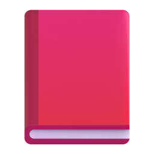
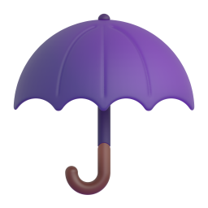
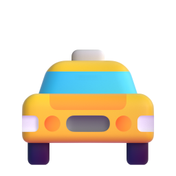

a and an
A ба an
By the end, you will never forget the small word Mongolian doesn't have.
Энэ хичээлийн төгсгөлд монгол хэлэнд байхгүй жижиг үгийг хэзээ ч мартахгүй.
The missing word
Монгол хэлэнд байдаггүй үг
I have a brother.
Надад ах бий.
She is a doctor.
Тэр эмч.
This is an apple.
Энэ алим.
Look at the Mongolian: nothing stands where a and an are.
Монгол өгүүлбэрт a, an-ий оронд юу ч байхгүй.
Examples
Жишээ
a cat
муур
a dog
нохой

a book
ном
a house
байшин
an apple
алим
an egg
өндөг
an orange
жүрж

an umbrella
шүхэр
What is different about the second row?
Хоёр дахь мөрийн үгс юугаараа өөр вэ?
a or an?
a уу, an уу?
a
+ consonant soundгийгүүлэгч авиа
a cat, a book, a teacher
an
+ vowel soundэгшиг авиа
an apple, an egg, an orange
aeiou
vowels
эгшиг
anapple
The n joins the next word: an apple.
n дараагийн үгтэйгээ холбогдоно: an apple.
Sound, not letter
Үсэг биш, авиа
starts with a "you" sound
"ю" авиагаар эхэлнэ
a university
их сургууль
a uniform
дүрэмт хувцас
the h is silent
h дуудагдахгүй
an hour
цаг
an honest man
шударга хүн
Your ears decide, not your eyes.
Нүд биш, чих шийднэ.
The next word decides
Дараагийн үг шийднэ
Noun alone
Нэр үг дангаараа
With an adjective
Тэмдэг нэртэй
an apple
a red apple
улаан алим
a car
an old car
хуучин машин
an egg
a big egg
том өндөг
a and an look only at the next word.
a, an зөвхөн дараагийн үгээ хардаг.
When we use a and an
A, an-г хэзээ хэрэглэх вэ?
One of something
Нэг зүйл
I have a brother.
Надад ах бий.
Jobs
Ажил мэргэжил

He is a driver.
Тэр жолооч.
Never with plurals
Олон тоотой хэзээ ч хэрэглэхгүй
a bookbooksa books
a and an mean one.
a, an нь "нэг" гэсэн утгатай.
How a sounds
A хэрхэн дуудагдах вэ?
a = /ə/
In speech, a is a quick, soft "uh".
Ярианд a нь богино, сул "э" авиа.
a CATa BOOKan APple
The stress goes on the noun.
Өргөлт нэр үг дээр бууна.
Watch out!
Анхаар!
Mongolian has no a or an, so it is easy to forget.
Монгол хэлэнд a, an байдаггүй тул амархан мартагддаг.
Буруу
She is teacher.
Зөв
She is a teacher.
Тэр багш.
Буруу
I have a books.
Зөв
I have a book.
Надад ном бий.
Бурууan university
Зөв
a university
их сургууль
Model text: my family
Загвар эх: миний гэр бүл
My father is an engineer.
Аав маань инженер.
My mother is a teacher.
Ээж маань багш.
I have a brother and an older sister.
Надад нэг дүү, нэг эгч бий.
My sister is a university student.
Эгч маань их сургуулийн оюутан.
We have a dog and an old cat.
Манайд нохой, бас хөгшин муур бий.
Remember
Санаж ав
1
a + consonant sound · an + vowel sound
a + гийгүүлэгч авиа · an + эгшиг авиа
2
The sound decides: an hour · a university
Авиа шийднэ: an hour · a university
3
Jobs need a or an: He is a driver.
Ажил мэргэжилд a, an заавал хэрэгтэй.
Now try the exercises below this video.
Одоо энэ видеоны доорх дасгалаар мэдлэгээ шалгаарай.